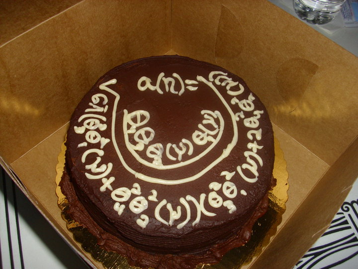

vegan math cake
|
ABOUT THIS SITE:
The purpose of this site is to answer the frequent questions I am asked about my veganism. Also, I have a secret agenda to instill a love of vegan foods in all people no matter what their eating preferences! DISCLAIMER: Although I tell myself I make convincing arguments regarding the nutritional viability of veganism, I am not a nutritionist and have absolutely no degrees or qualifications of any kind in this arena. This page should not be taken as medical advice! I'm merely a bright eyed lover of vegan food expressing my affection. |
Who
Me, you, and meat-eaters too!
A popular myth is that vegan food is boring, tasteless, and mostly salad.
On the contrary, vegans desire filling and wholesome foods just like anyone!
Some examples are peanut noodle salads, cashew nacho cheeze, tamari almond stuffed portobello mushrooms, applie pie, orzo stuffed peppers, and more!
Vegan food is creative food and everyone can appreciate that. :D
What
on Wikipedia
When
Anytime! Really, it's up to you.
Don't let other people guilt you into eating meat or eating vegan.
Focus on health, not guilt or shame!!!
Where
Vegan food is everywhere and interesting vegan food is on the rise. I wish it were realistic for me to recount all my international vegan experiences, but it's not! Instead, I direct you to HappyCow.net, where you can radially locate many vegan foods from anywhere in the world simply by entering an address. For those interested, you can register on the happycow site and help us happycow-ers continually expand the list of food establishments!

Why
Strict veganism is a personal choice that is not well suited for everyone. There are very good arguments both for and against long term veganism. I choose veganism it because the food energizes me. I love love the food! Also, it's a fun and interesting way to experience the world. That being said, it is impossible for anyone to be 100% fully vegan. The best one can do is eat things that are vegan to the best of your knowledge and always be re-evaluating how veganism makes you feel and whether it suits you. I don't think you should become vegan unless you want to be vegan, but trying out (and getting addicted to) some amazing vegan meals is a must for all humans!
How
Check out the various menu items on this page!